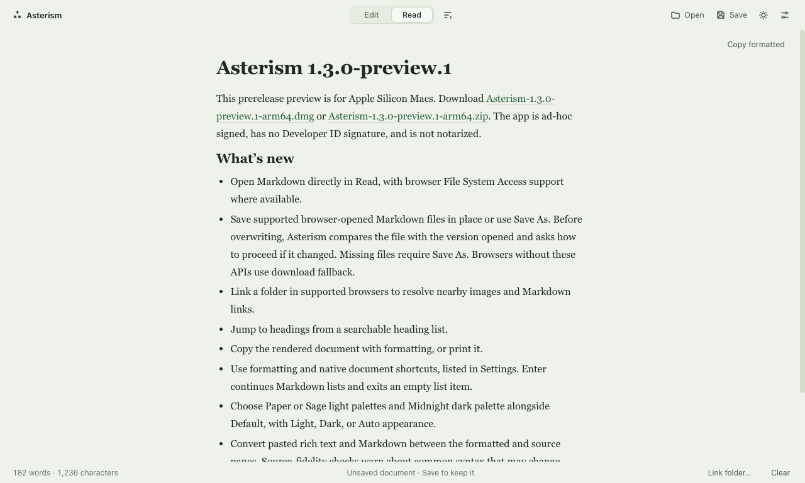
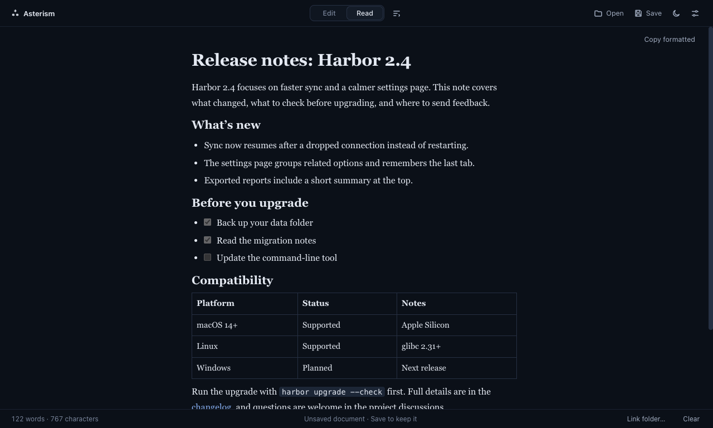

Markdown, made to be *read*.
Open a .md file and it arrives as a quiet page, not a wall of symbols. Switch to Edit when you want to change something. Local, no account.
Mac preview is Apple Silicon only and not notarized, so macOS asks you to confirm the first launch.

Pick the page
you read on.


Every #, * and > steps aside.
Illustrative sample, not the app running. Flip it to see what Read view does with the punctuation.
Trip notes: Lisbon
Land at 9:40, then take the red line into town.
Pack
Passport
Phone charger
Wander up Alfama before the crowds do.
Two ways in.
In your browser Open the app Nothing to install. Open a file, read, edit, save.Good to know
What does the browser version do with files?
Where the browser supports the File System Access API, Save writes back to the file, and Link folder lets Asterism resolve local images and relative Markdown links inside the one folder you pick. Elsewhere, Save downloads a copy and local images and relative links are not resolved.
Does editing change my Markdown?
Source mode keeps your text exactly as written. If you edit in Read view, the page is converted back to Markdown, and that conversion can normalize formatting. Copy formatted gives you rich text for pasting elsewhere.
What stays on my device?
Documents are processed locally and there is no account. Asterism keeps recovery snapshots on your device; turn autosave off and it stops taking them. Remote images in a document load from their own servers, like any web page.
Is it finished?
It is a personal open-source project and this is a preview. Feedback is welcome on GitHub.